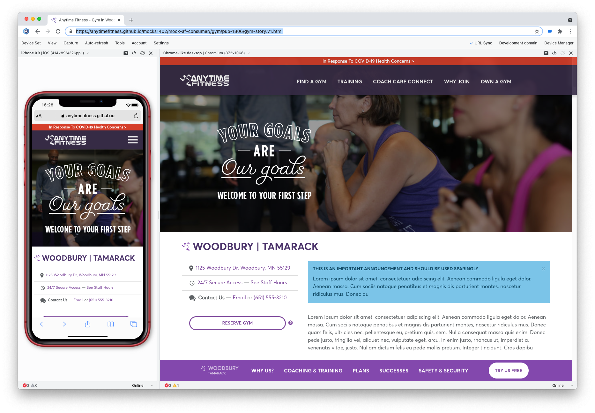
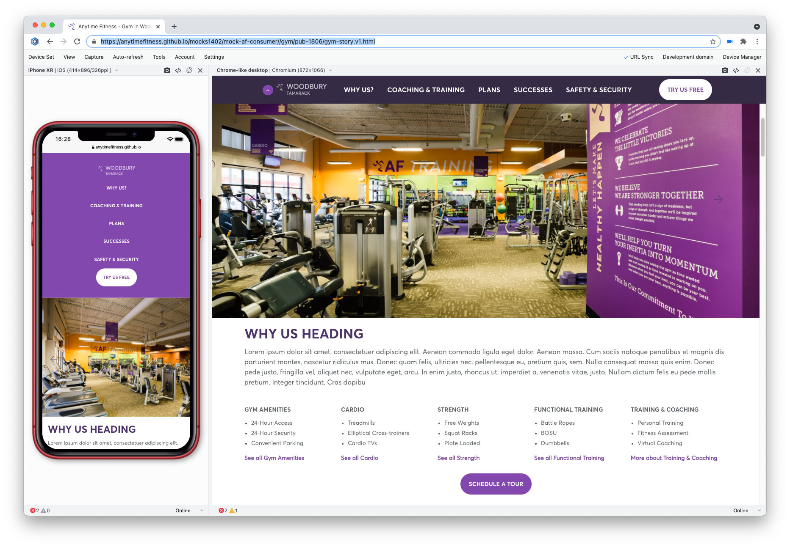
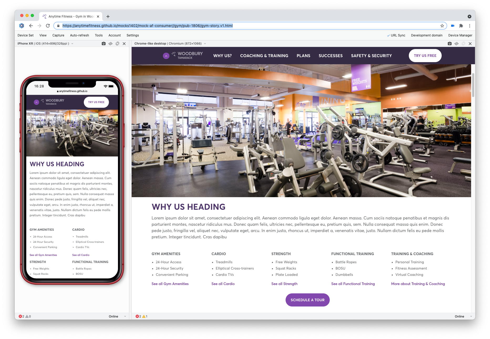
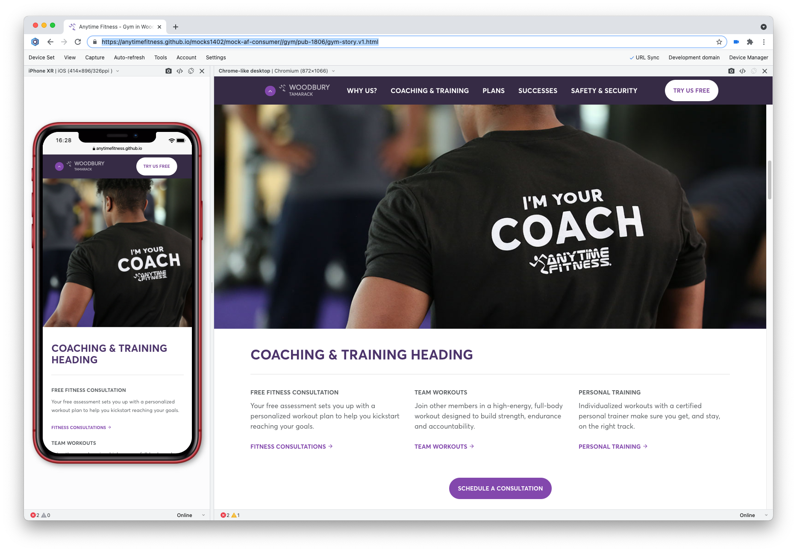
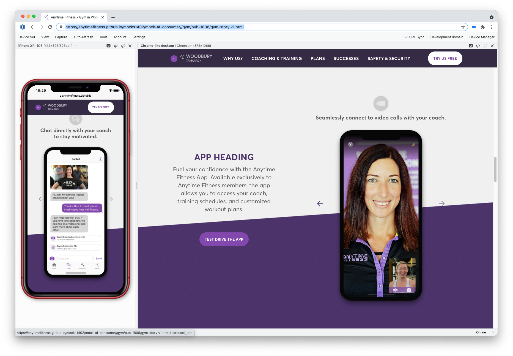
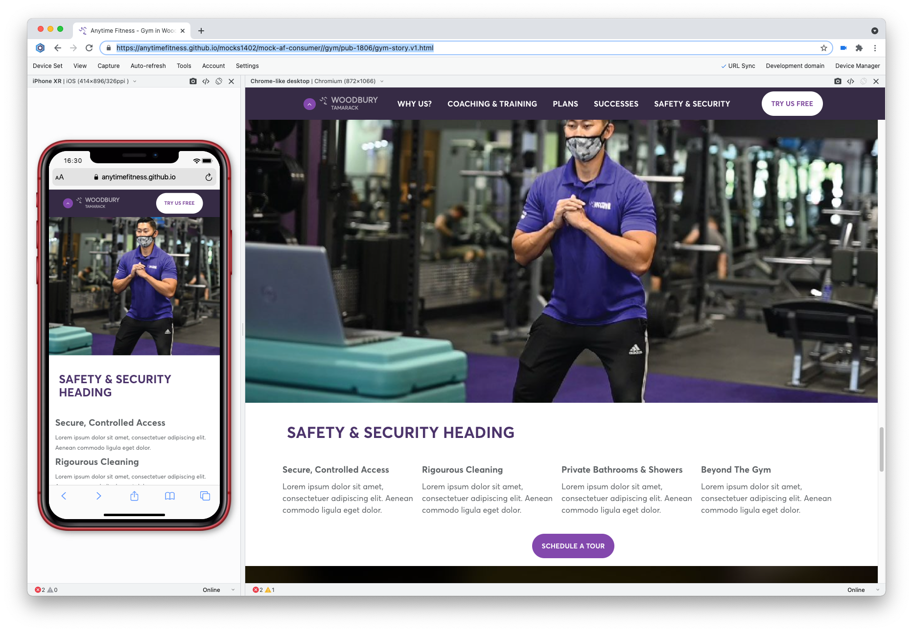
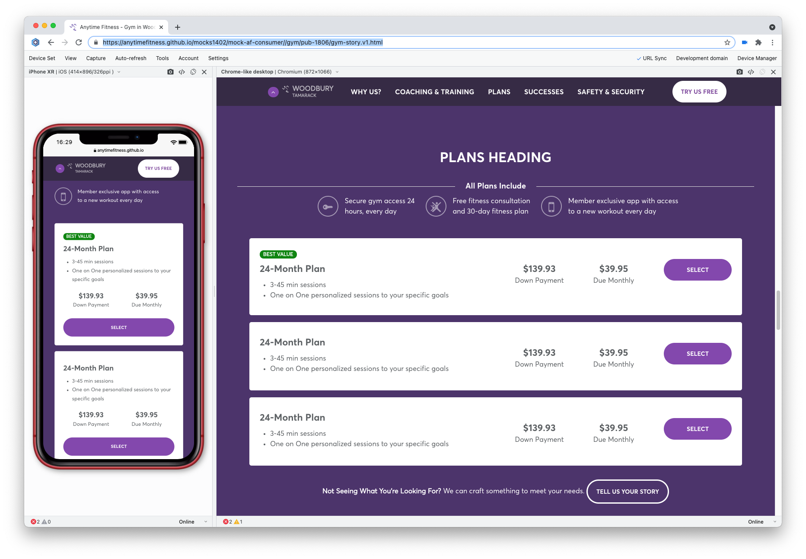
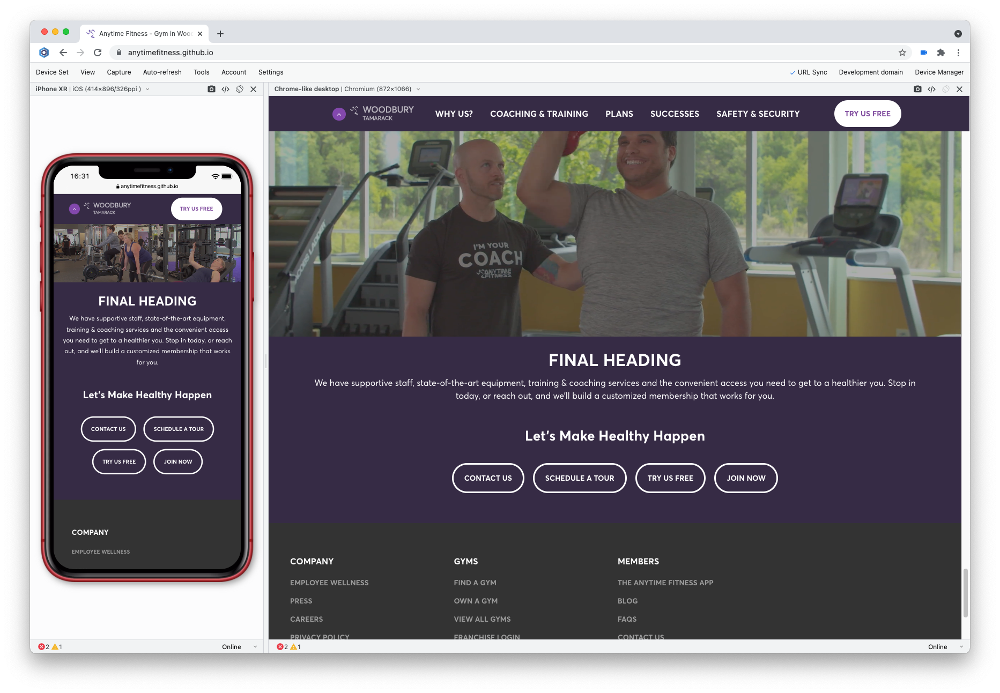

Anytime Fitness wanted to redesign the template for their location pages. The primary goal was to increase conversion by communicating the brand’s value proposition through storytelling while optimizing with a mobile-first mindset.
I built a responsive HTML prototype which allowed us to rapidly test and ensure optimal usability at all possible screen sizes.
The location pages are unique in that they have a contextual subnav which is completely independent of the site’s global nav.
I designed the scroll behavior so that after the user had scrolled a screen’s worth, the fixed global nav was effectively replaced by the location’s contextual nav. This allowed the user to easily navigate the page while still having access to the broader site.



While an "uber" call to action is omnipresent in the sticky nav bar, each “chapter” of the story has its own contextually primary call to action. It was important to make sure these were easy to navigated to for more decisive users but also presented with proper context.



Some of the functionality isn't offered by every location, so the location pages are designed modularly. Gym owners can opt into or out of features without negatively effective the overall UX of the page.
If a location doesn't offer a feature online, a logical alternative will appear instead. For example, some gyms offer the ability to sign up for a membership only. Those that don't display a lead capture form instead.

Marketing wanted to include a background video a the top of the page for desktop users to help illustrate the value proposition put forth in the copy. However, our research suggested that users tended to scroll the video out of view before it even started to play.
We moved the background video to the bottom of the screen, near a summary roundup of each of the locations primary calls to action. This added value in a section of the page where users tended to linger, while also providing a passive "review" of what they've scrolled through.

That's just some of the notable UX features in this redesign, all of which is mocked up to extraordinarily high fidelity using HTML, CSS, and simple scripting.